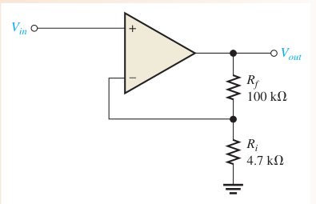
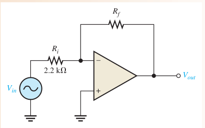
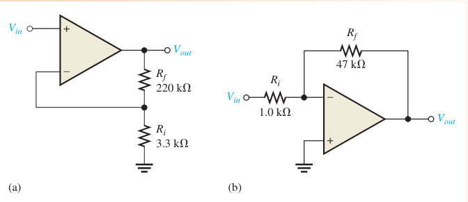

02. Bộ khuếch đại thuật toán (op-amp) Op-amp lý tưởng và thực tế, CMRR, slew rate, hồi tiếp âm và đáp ứng tần số (Floyd chương 12).
EASA Part-66 4.1.3 (a) linear circuits / op-amps CLO: CLO1, CLO2, CLO3 Thời lượng: ≈ 6 giờ lý thuyết + bài tập Câu hỏi: 165 (51 gốc)
Floyd 9e Ch.12 · Jaeger 5e Ch.10 §10.5–10.9 · Ch.11 §11.2, 11.11–11.13 · Bản đồ nội dung sách
🎯 Sau module này bạn sẽ Phân biệt op-amp lý tưởng và thực tế Tính CMRR, I_BIAS, I_OS, slew rate Tính độ lợi, B, Zin, Zout của mạch hồi tiếp âm Dùng fT để tìm băng thông vòng kín PHẦN 1/5
01
Nền tảng của op-amp Lý tưởng so với thực tế Chế độ vi sai và chung, CMRR Dòng phân cực, offset, slew rate Phần 1 · Nền tảng
Op-amp lý tưởng và thực tế Op-amp = bộ khuếch đại vi sai ngõ vào–ra đơn, độ lợi vòng hở rất lớn Hai ngõ vào: đảo (−) và không đảo (+); một ngõ ra; nguồn đối xứng ±V Lý tưởng: Zin = ∞, Zout = 0, Aol = ∞, băng thông = ∞, CMRR = ∞ Tham số Lý tưởng Thực tế (điển hình) Aol ∞ 10⁵–2·10⁵ Zin ∞ ≈ MΩ–GΩ Zout 0 ≈ 10–100 Ω CMRR ∞ ≳ 90 dB
📖 Giải thích cho người mới bắt đầu Op-amp là “viên gạch” khuếch đại: nhận hiệu hai điện áp rồi nhân lên hàng trăm nghìn lần. Mạch ngoài (điện trở) mới quyết định độ lợi thực dùng.
Phần 1 · Nền tảng
Ba chế độ ngõ vào Vi sai ngõ vào đơn: một ngõ vào nối đất, tín hiệu vào ngõ còn lại Vi sai ngõ vào kép: tín hiệu đặt giữa hai ngõ vào Chế độ chung: cùng một tín hiệu ở cả hai ngõ vào → ngõ ra ≈ 0 (nhiễu bị triệt) 📖 Giải thích cho người mới bắt đầu Nhiễu thường xuất hiện giống hệt trên cả hai dây dẫn; vi sai chỉ khuếch đại phần khác nhau nên nhiễu bị loại.
Phần 1 · Nền tảng
Tỉ số CMRR và đơn vị dB Aol độ lợi vòng hở Acm độ lợi chế độ chung Ví dụ · Bài 5 (Floyd)
Aol = 175 000, Acm = 0,18 → CMRR = 972,222 → 119.8 dB ≈ 120 dB
📖 Giải thích cho người mới bắt đầu CMRR càng lớn càng tốt. 20 dB nghĩa là gấp 10 lần điện áp, 40 dB là 100 lần, 80 dB là 10 000 lần.
Phần 1 · Nền tảng
Dòng phân cực, offset và slew rate Tham số Công thức Ý nghĩa I_BIAS (I₁ + I₂)/2 dòng vào trung bình I_OS |I₁ − I₂| chênh lệch hai dòng vào V_OS áp vào để ngõ ra = 0 lệch cân bằng tầng vào SR ΔV_out / Δt tốc độ đổi ngõ ra tối đa (V/μs)
Ví dụ · Bài 7–10
I_BIAS = 8,1 μA; I_OS = 0,4 μA; SR = 24 V/15 μs = 1,6 V/μs; đổi −10→+10 V với 0,5 V/μs mất 40 μs
📖 Giải thích cho người mới bắt đầu Hai ngõ vào luôn hút một dòng nhỏ; nếu hai dòng khác nhau sẽ có sai số một chiều. Slew rate giới hạn tín hiệu lớn, tần số cao.
PHẦN 2/5
02
Phương pháp phân tích Mạch không đảo và đảo Trở kháng với hồi tiếp Đáp ứng tần số vòng kín Phần 2 · Phương pháp
Bộ khuếch đại không đảo 
Floyd Hình 12–18 Với Rf = 100 kΩ, Ri = 4,7 kΩ: Acl = 22.3.
📖 Giải thích cho người mới bắt đầu Tín hiệu vào ngõ (+), một phần ngõ ra B được trả về ngõ (−). Ngõ (−) luôn bám theo ngõ (+), nên Vout = Vin/B.
Phần 2 · Phương pháp
Bộ khuếch đại đảo 
Floyd Hình 12–22 Ngõ vào đảo là “đất ảo”: dòng qua Ri bằng dòng qua Rf.
📖 Giải thích cho người mới bắt đầu Vì (−) ≈ 0 V, dòng vào = Vin/Ri chạy hết qua Rf nên Vout = −Vin·Rf/Ri. Dấu trừ nghĩa là đảo pha 180°.
Phần 2 · Phương pháp
Trở kháng vào/ra và mạch lặp Cấu hình Zin Zout Không đảo (1 + B·Aol)·Zin Zout / (1 + B·Aol) Lặp điện áp (1 + Aol)·Zin Zout / (1 + Aol) Đảo ≈ Ri Zout / (1 + B·Aol)
Mạch lặp điện áp Ngõ ra nối thẳng về (−): Acl = 1, cùng pha, Zin cực lớn → mạch đệm.
📖 Giải thích cho người mới bắt đầu Hồi tiếp âm làm mạch “cứng” hơn: dễ nhận tín hiệu (Zin cao) và dễ cấp tải (Zout thấp).
Phần 2 · Phương pháp
Băng thông và tích độ lợi–băng thông Độ dốc −20 dB/decade phía trên fc; tích độ lợi–băng thông không đổi.
📖 Giải thích cho người mới bắt đầu Muốn độ lợi lớn gấp 10 thì băng thông chỉ còn 1/10: đổi độ lợi lấy băng thông.
PHẦN 3/5
03
Ví dụ từ sách Độ lợi, B, Rf Slew rate Băng thông vòng kín Phần 3 · Ví dụ từ sách
Tính độ lợi và Rf (Floyd Bài 12–15) Ví dụ · Floyd Bài 13
Acl = 1 + 560/1,5 = 374.3; Vout = 3.743 V rms; Vf = 10 mV
Ví dụ · Floyd Bài 12
B = 1/101 = 0.0099; Vf = B·5 V = 49.5 mV
Ví dụ · Floyd Bài 15
Rf = 49 kΩ, 3 MΩ, 84 kΩ, 165 kΩ (khớp đáp án sách)
📖 Giải thích cho người mới bắt đầu Quy trình: xác định cấu hình → chọn công thức → thay số → kiểm tra bằng sách.
Phần 3 · Ví dụ từ sách
Slew rate và thời gian chuyển mức Ví dụ · Floyd Bài 9
SR = 24 V / 15 μs = 1,6 V/μs
Ví dụ · Floyd Bài 10
Δt = 20 V / (0,5 V/μs) = 40 μs
Giới hạn slew rate Sin biên độ Vp tần số f cần SR ≥ 2π·f·Vp. Với 10 V đỉnh và 0,5 V/μs: f ≤ 7,96 kHz.
📖 Giải thích cho người mới bắt đầu Tần số tối đa không méo của sin: f_max = SR/(2π·Vp).
Phần 3 · Ví dụ từ sách
Đáp ứng tần số vòng kín (Floyd Bài 37–38) Ví dụ · Floyd Bài 37
fc(cl)/fc(ol) = 5500/750 = 7,333; Aol = 28,184; Acl = 3,843 → 71.7 dB
Ví dụ · Floyd Bài 38
fT = Acl·fc(cl) = 3,843 × 5,5 kHz = 21.1 MHz
Kiểm tra chéo: Aol·fc(ol) = 21.1 MHz.
📖 Giải thích cho người mới bắt đầu Hai cách tính độ lợi–băng thông phải cho cùng kết quả: đó là phép tự kiểm tra tốt.
Phần 3 · Ví dụ từ sách
So sánh hai mạch ở Hình 12–43 
Floyd Hình 12–43 (a) Acl = 1 + 220/3,3 = 67.7; (b) |Acl| = 47.
📖 Giải thích cho người mới bắt đầu Đổi Rf, Ri nhưng giữ tỉ số Rf/Ri thì độ lợi và băng thông không đổi (Circuit-Action câu 7).
PHẦN 4/5
04
Sai lầm thường gặp Sự cố Rf/Ri Bù dòng phân cực Băng thông so với slew rate Phần 4 · Sai lầm và mở rộng
Sự cố điện trở hồi tiếp Sự cố Triệu chứng Rf hở Hết hồi tiếp → độ lợi = Aol → bão hòa Ri hở (mạch đảo) Tín hiệu không vào → ngõ ra ≈ 0 Rf chập Độ lợi = 1 hoặc 0 (mạch đảo)
📖 Giải thích cho người mới bắt đầu Hỏi “đường hồi tiếp còn nguyên không?” là câu đầu tiên khi sửa mạch op-amp.
Phần 4 · Sai lầm và mở rộng
Bù dòng phân cực và chỉnh null offset Bù dòng phân cực Thêm Rc = Ri‖Rf vào ngõ (+) của mạch đảo để hai sụt áp do dòng phân cực bằng nhau; sai số ngõ ra còn lại chỉ do I_OS và V_OS.
📖 Giải thích cho người mới bắt đầu Dòng phân cực nhỏ nhưng qua điện trở lớn sẽ tạo điện áp một chiều đáng kể ở ngõ ra.
Phần 4 · Sai lầm và mở rộng
Hai giới hạn tần số: băng thông và slew rate Biên độ nhỏ, tần số cao → bị giới hạn bởi băng thông (GBP) Biên độ lớn, tần số cao → bị giới hạn bởi slew rate → méo thành tam giác Cả hai đều xuất hiện khi tăng tần số; hãy kiểm tra cả hai 📖 Giải thích cho người mới bắt đầu Một tín hiệu có thể “đủ băng thông” nhưng vẫn méo vì đổi mức quá nhanh so với slew rate.
Phần 4 · Sai lầm và mở rộng
Sai số do Aol hữu hạn Với Aol = 100 000 và B = 1/101: Acl = 100.8981 (so với 101). Sai số ≈ 0,1 %.
📖 Giải thích cho người mới bắt đầu Công thức 1 + Rf/Ri chỉ đúng khi Aol rất lớn; Aol thấp hoặc ở tần số cao sai số tăng.
PHẦN 5/5
05
Ứng dụng và tổng kết Cảm biến trên tàu bay (minh hoạ) Bảng công thức Tự kiểm tra Phần 5 · Ứng dụng trên tàu bay
Điều hoà tín hiệu cảm biến Minh hoạ: bộ khuếch đại thiết bị cho cảm biến (nhiệt ngẫu, cầu đo biến dạng) cần CMRR cao vì dây dài mang nhiễu chung Minh hoạ: mạch lặp đệm tín hiệu từ cảm biến trở kháng cao trước bộ chuyển đổi A/D Điều kiện bay: nhiệt độ rộng làm I_BIAS và V_OS trôi → chọn op-amp offset thấp 📖 Giải thích cho người mới bắt đầu Các ví dụ này chỉ minh hoạ nguyên lý, không mô tả một hệ thống tàu bay cụ thể.
Phần 5 · Tổng kết
Bảng công thức chương 12 Đại lượng Công thức CMRR Aol/Acm = 20·log₁₀(Aol/Acm) dB I_BIAS, I_OS (I₁+I₂)/2 ; |I₁−I₂| SR ΔVout/Δt Acl(NI) 1 + Rf/Ri Acl(I) −Rf/Ri Zin(NI), Zout(NI) (1+B·Aol)·Zin ; Zout/(1+B·Aol) fc(cl), BWcl fc(ol)(1+B·Aol(mid)) fT Acl·fc(cl) = Aol(mid)·fc(ol)
📖 Giải thích cho người mới bắt đầu Thuộc ba công thức độ lợi, CMRR và fT là đủ giải phần lớn bài tập.
Phần 5 · Tổng kết
Tự kiểm tra nhanh Nêu 4 đặc điểm của op-amp lý tưởng Tính CMRR (dB) khi Aol = 100 000, Acm = 0,5 → 106.0 dB Mạch không đảo Rf = 47 kΩ, Ri = 4,7 kΩ: Acl = ? → 11 Op-amp có fT = 5 MHz, Acl = 50: BW = ? → 100 kHz 📖 Giải thích cho người mới bắt đầu Làm thêm ở ngân hàng câu hỏi bên dưới (165 câu trắc nghiệm + 13 bài tự luận).
Phần 5 · Tổng kết
Ba ý chính của module Op-amp thực dùng với hồi tiếp âm: độ lợi do điện trở quyết định Hồi tiếp đổi độ lợi lấy băng thông, tăng Zin, giảm Zout Module sau: mạch so sánh, cộng, tích phân, vi phân 📖 Giải thích cho người mới bắt đầu Nắm chắc công thức vòng kín là nền cho mọi mạch op-amp về sau.
◀ Trước Sau ▶
⛶ Toàn màn hình Nội dung chi tiết 1. Nội dung chi tiết đối chiếu sách Floyd §12–1: op-amp lý tưởng/thực tế, ký hiệu. §12–2: ngõ vào đơn/kép, chế độ chung, CMRR, I_BIAS, I_OS, V_OS, slew rate. Floyd §12–3 đến §12–5: hồi tiếp âm, mạch không đảo/đảo/lặp, ảnh hưởng lên Zin và Zout. Floyd §12–6: bù dòng phân cực. §12–7: đáp ứng tần số và pha vòng hở. §12–8: đáp ứng vòng kín. §12–9: kiểm tra sự cố. Đọc thêm: Jaeger 5e Ch.10 §10.5–10.9 và Ch.11 §11.2, 11.11–11.13 theo bản đồ đề cương (chưa trích trang cụ thể). 2. Năm ví dụ có lời giải số Ví dụ · Ví dụ 1 – CMRR (Floyd Bài 5)
CMRR = 175000/0.18 = 972,222; 20·log₁₀ = 119.76 dB
Ví dụ · Ví dụ 2 – Không đảo (Floyd Bài 13)
Acl = 1 + 560/1.5 = 374.33; Vout = 3.743 V rms; B = 1.5/561.5 = 0.00267; Vf = 10.00 mV
Ví dụ · Ví dụ 3 – Slew rate (Floyd Bài 9–10)
SR = 24/15 = 1.6 V/μs; Δt = 20/0.5 = 40 μs
Ví dụ · Ví dụ 4 – Vòng kín (Floyd Bài 37–38)
Acl = 3,843 (71.7 dB); fT = 21.1 MHz
Ví dụ · Ví dụ 5 – Trở kháng không đảo
Aol = 100 000, B = 1/101 → 1 + B·Aol = 991.1; Zin = 2 MΩ → 1.98 GΩ; Zout = 75 Ω → 75.7 mΩ
3. Bối cảnh lịch sử/lý thuyết Op-amp xuất phát từ máy tính tương tự (thực hiện phép cộng, tích phân); vi mạch đơn khối như 741 làm cho chúng rẻ và ổn định. Ý tưởng cốt lõi là hồi tiếp âm: độ lợi lớn được đổi lấy sự chính xác và độ ổn định.
4. Ca ứng dụng trên tàu bay (minh hoạ) Minh hoạ: điều hoà tín hiệu cho cảm biến nhiệt độ hoặc áp suất — bộ khuếch đại vi sai CMRR cao loại nhiễu chung trên dây dài, mạch lặp đệm trước bộ chuyển đổi A/D. Đây là ví dụ nguyên lý, không phải mô tả hệ thống cụ thể.
5. Bẫy khi làm bài thi Quên “+1” ở mạch không đảo; nhầm dấu ở mạch đảo. Dùng 10·log thay 20·log cho tỉ số điện áp. Nhầm I_BIAS (trung bình) với I_OS (hiệu). Đổi đơn vị μs/ms khi tính slew rate. Rf hở → độ lợi KHÔNG bằng 0 mà tăng lên Aol. Tự kiểm tra nhanh (10 câu, ưu tiên câu gốc trong sách) Luyện tập sâu Mở ngân hàng câu hỏi của module (165 + 13)
Notebook Jupyter Tải notebook (đã chạy sẵn, có đầu ra thật):